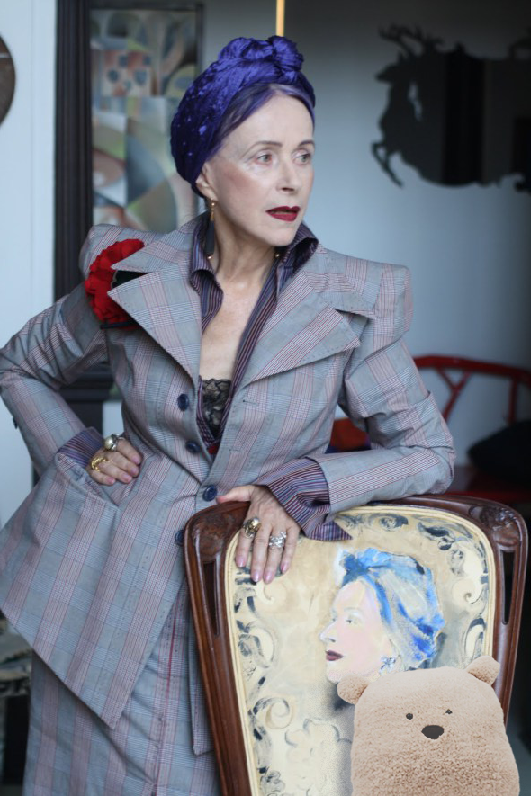
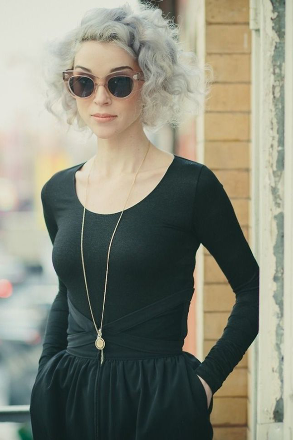

our story


Flip & Stitch
Florence “Flip” Peters was a renowned Pittsburgh seamstress who specialized in custom pillows. When she passed away in 2016, she named her grandaughter, Elspeth, a.k.a. Stitch, as her successor. It was a natural choice - Flip taught Elspeth to sew, to dress, and to dream. Elspeth took this opportunity to combine whimsy, comfort, and modernism. Her debut line for Flip/Stitch, entitled Creature Comforts, was released in 2017 and speaks to Flippy’s legacy of chicness and irony.